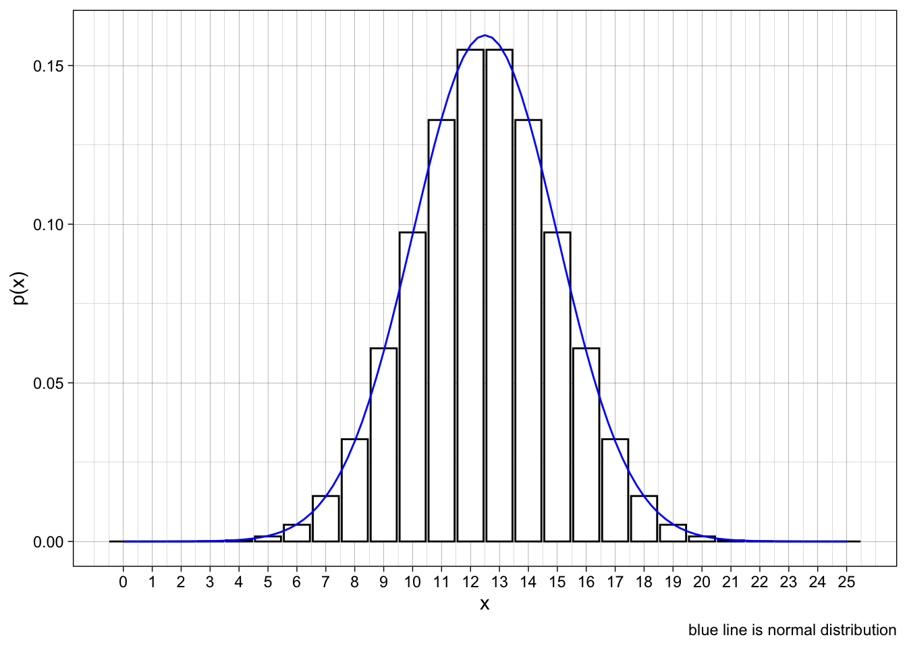
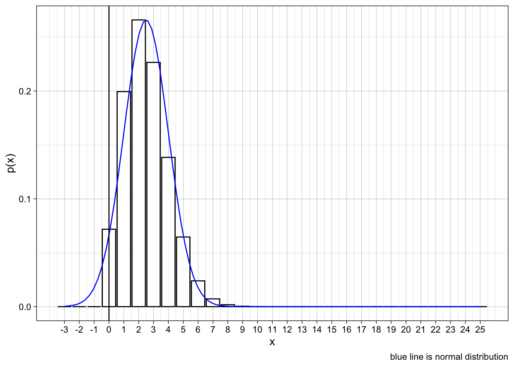

Lecture 15/16
Probability Distributions for Continous Random Variables
Section 6.3 The normal Approximatinoo to the Binomial Probability Distribution
- The binomial formaul produces lengthy calculations and the tables are available only for certains values of n and p.
- You can use the normal approximation to the binomial probability distribution
The normal approximation
Let x be a binomial random variable with n trials and probability p of success. The probability distribution of x is apprimated using a normal curve with:
\(\mu = np\) and \(\sigma = \sqrt{npq}\).
This approximation is adequate as long as n is large and p is not too close to 0 or 1.
Figure 6.17
- n = 25, p = 0.5
- \(\mu = ?\)
- \(\sigma = ?\)
- compare the areas under the curve to the areas in the bar
- Example the curve between 7.5 and 10.5 is approximately \(P(8 \lte x \lte 10)\)
Use Binomial Probability? \[ P(8 \lte x \lte 10) = .190 \]
Use Normal approximation (subtract .5 from lower end and add .5 to upper end)
\[ P(7.5 \lte x \lte 10.5) = .1891 \]
- z-score
The 1/2 half adjustment is called a continuity correction and helps account for th efact that you are approximating a discrete random variable with a continuous one.
Rule of thumb:
- The normal approximation to the binomial probabilities will be adequate if both:
- \(np >5\) and \(nq >5\)
Figure 6.18
- n = 25, p = .1
- \(\mu = ?\)
- \(\sigma = ?\)

Example 6.12
The reliability of an electrical fuse it he probability that a fuse, chosen at random from pdouction will function under its designed conditions. A random sample of 1000 fuses was tested and x = 27 defectives were observed. Calculate the approximate probablity of observing 27 or more defectives, assuming that the fuse reliability is .98.
\(\mu = np = 1000*.02 = 20\)
$= $
Check if normal approximation is appropriate?
Create z score for value of 26.5
Normal approximatino yields .0708
Using exact:
[1] 0.0507Example 6.12
A soda manufacturer was fairly certain that her brand had a 10% share of the market. In a survey involving 2500 soda drinkers, x = 211 preferred her brand. If the 10% figure is correct, find the probability of observing 211 or fewer consumers who perfer her brand of soda.
\(\mu = 250\)
\(\sigma = 15\)
Z score for 211.5 = -2.57
\[ P(x \le 211) \approx P( z \lt -2.57) = .0051 \]
Exact binomial probability:
[1] 0.0044What happened??
Either observed an unusual sample even though p = 0.1 OR the sample reflects the valuye of p is less than .1 and perhaps closer to 21/2500 = .08
Homework
[1] "6.3.13, 6.3.15, 6.3.24, 6.3.28"Answers: Section 6.3